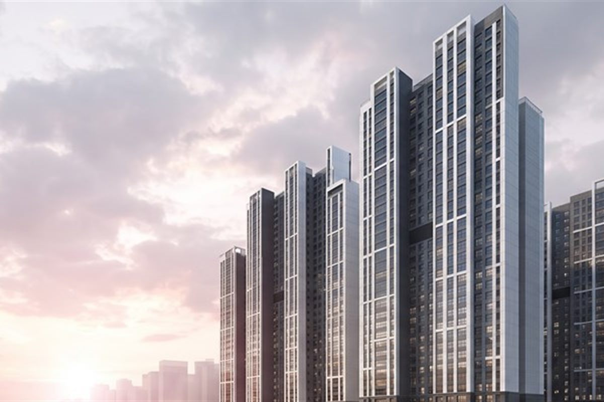
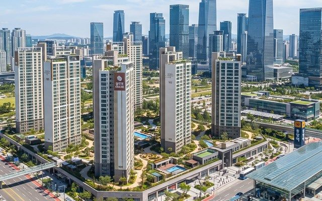
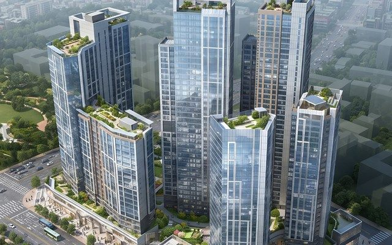

신축 · 리모델링 · 증축
짓는 동안의 과정을 숨기지 않습니다
견적서의 항목부터 현장의 하루까지 사진과 기록으로 남깁니다.
끝나고 나서가 아니라, 짓는 동안 확인하실 수 있습니다.
- 설계 검토 예산과 구조를 함께 정합니다
- 착공 허가가 나면 바로 시작합니다
- 골조 · 마감 매주 사진과 기록을 보냅니다
- 준공 함께 둘러본 뒤 열쇠를 드립니다
집을 짓는 일은
약속을 지키는 일입니다.
견적서에 적힌 금액과 공정, 그대로 짓습니다.
다름건설은 단독주택 · 다가구주택 · 근린생활시설 · 소규모 공장을 짓는 종합건설 회사입니다. 설계 검토 단계에서 예산과 공정을 함께 확정하고, 착공 뒤에는 담당자가 매주 현장 사진과 기록을 보내드립니다. 공사 중에 자재나 인원을 이유로 금액을 올려 받지 않습니다. 착공 · 골조 · 마감 · 준공 검사까지 한 담당자가 처음부터 끝까지 함께합니다.
- 0동 준공한 건물
- 0곳 진행 중인 현장
- 0년 현장 시공 경력
- 0년 하자 보수 보증
-
계약이행 · 하자보수 보증서 발급
건설공제조합 보증서를 발급하고, 현장 인원 모두 산재보험에 가입한 뒤 공사를 시작합니다. 준공 뒤 하자는 보증 기간 동안 무상으로 보수합니다.
-
직영 팀이 끝까지 책임
골조 · 설비 · 마감을 오래 함께한 직영 팀이 맡고, 공정을 통째로 하도급에 넘기지 않습니다. 현장마다 담당자 이름과 연락처를 드립니다.
-
현장 확인 · 확정 금액제
대지와 도면을 직접 확인하고 공정별 금액을 적은 견적서를 드립니다. 설계 변경이 없는 한 공사 중에 금액이 올라가는 일은 없습니다.

다름건설 시공 분야
설계 검토부터 준공까지, 주택 · 근린생활시설 · 소규모 공장 · 리모델링을 직영으로 시공합니다.
주택 신축
단독주택과 다가구 · 다세대 주택을 짓습니다. 설계 검토 단계에서 예산에 맞는 구조와 마감을 함께 정합니다.
근린생활시설
상가와 사무실이 들어가는 소규모 건물을 짓습니다. 임대를 고려한 평면과 설비 계획을 처음부터 반영합니다.

공장 · 창고
철골조 공장과 창고를 짓습니다. 장비 반입 동선과 전력 용량을 먼저 확인해 설계에 담습니다.

리모델링 · 증축
오래된 건물의 구조를 보강하고 용도를 바꿉니다. 대수선 · 증축 허가부터 준공까지 함께 진행합니다.
공사비는 대지 조건과 구조, 마감 수준에 따라 달라집니다.
도면이나 대지 정보를 보내주시면 검토 후 견적을 안내해 드립니다.
문의부터 준공까지 네 단계로 진행합니다.
도면이 없어도 괜찮습니다. 상담부터 허가와 준공까지 담당자가 챙깁니다.
상담 · 현장 확인
전화나 아래 문의 폼으로 대지 위치와 용도를 남겨주세요. 현장을 보고 예산 범위를 함께 정합니다.
설계 검토 · 견적
도면을 검토해 구조와 마감을 정하고, 공정별 금액을 적은 견적서와 계약서를 드립니다.
착공 · 시공
허가가 나면 착공합니다. 골조 · 설비 · 마감 순서로 진행하며 매주 현장 사진을 보내드립니다.
준공 · 하자 보수
준공 검사를 마치고 함께 둘러본 뒤 열쇠를 드립니다. 이후 하자는 보증 기간 동안 보수합니다.
실제로 준공한 현장들입니다.
건축주를 특정할 수 있는 내용은 지우고 구조와 기간만 남겼습니다. 같은 용도라도 대지와 조건에 따라 공사비와 기간은 달라집니다.
경사지에 지은 2층 목조 단독주택
경사가 있는 대지라 기초 높이와 옹벽 계획에 시간을 들인 현장입니다. 설계 단계에서 배수 계획을 함께 잡아 준공 뒤 물 문제가 없습니다.
임대 세대를 둔 4층 다가구주택
1층 주차장, 2 · 3층 임대 세대, 4층 주인 세대로 나눈 건물입니다. 세대별 계량기와 층간 방음을 처음부터 설계에 반영했습니다.
1층 상가 · 2층 사무실 근린생활시설
대로변 모퉁이 대지에 지은 2층 건물입니다. 임대를 고려해 층별 출입구와 화장실을 따로 두었습니다.
1층 카페 · 위층 사무실 복합 건물
1층은 카페, 2 · 3층은 사무실로 쓰는 건물입니다. 1층 전면을 통유리로 열고 뒤쪽에 하역 공간을 두었습니다.
철골조 소규모 공장 신축
금속 가공 장비가 들어가는 공장입니다. 장비 하중에 맞춰 바닥 두께를 정하고 전력 용량을 먼저 확보했습니다.
영업을 멈추지 않은 물류 창고 증축
기존 창고 옆에 같은 높이로 붙여 지은 증축 현장입니다. 영업을 멈추지 않도록 공정을 둘로 나눠 진행했습니다.
40년 된 주택 구조 보강 · 리모델링
벽돌조 주택의 지붕과 설비를 모두 바꾼 현장입니다. 구조 보강 뒤 단열과 창호를 지금 기준으로 맞췄습니다.
창고를 상가로 바꾼 용도 변경 · 대수선
창고로 쓰던 건물을 근린생활시설로 바꾼 현장입니다. 용도 변경 허가부터 소방 설비까지 함께 진행했습니다.
해당 분야의 사례가 아직 없습니다.
위 내용은 이해를 돕기 위해 정리한 예시이며, 실제 공사비와 기간은 현장마다 다릅니다.
시공 사례 더보기현장 사진
진행 중인 현장과 준공한 건물의 사진입니다. 옆으로 밀어서 더 보실 수 있습니다.
전화로 가장 많이
물어보시는 것들
여기에 없는 내용은 전화로 편하게 물어보셔도 됩니다.
대지와 도면을 확인한 뒤 공정별 금액을 적은 견적서를 드립니다. 설계 변경이 없으면 그 금액 그대로 계약하며, 그날 결정하지 않으셔도 됩니다.
단독주택은 보통 다섯 달에서 여섯 달, 근린생활시설은 규모에 따라 일곱 달에서 열 달 정도입니다. 허가 기간과 장마 · 혹한기는 따로 잡습니다.
됩니다. 대지 위치와 용도, 예산 범위만 말씀해 주시면 가능한 규모와 예상 공사비를 먼저 안내드립니다. 설계는 함께 일하는 건축사와 진행하거나, 가지고 계신 도면을 검토해 드립니다.
언제든 오실 수 있습니다. 매주 현장 사진과 공정표를 보내드리고, 골조와 마감 전에는 함께 둘러보는 날을 따로 잡습니다.
건물 지하 주차장 이용 (방문 상담 시 2시간 무료) 방문 전에 전화 주시면 자리를 비워 두겠습니다.
준공일부터 보증 기간 동안 무상으로 보수합니다. 전화나 문의 폼으로 알려주시면 사흘 안에 방문해 확인합니다. 보증서는 준공 때 도면과 함께 드립니다.
계약 · 착공 · 골조 · 마감 · 준공, 다섯 번에 나눠 공정이 끝날 때마다 냅니다. 은행 건축자금 대출에 필요한 서류도 함께 준비해 드립니다.
연락 주시면 비용부터 정확히 안내드립니다.
이름과 연락처, 짓고 싶은 건물만 남겨주세요. 통화로 대지 조건을 확인한 뒤 예상 공사비와 현장 방문 일정을 알려드립니다. 상담은 무료입니다.
-
무료 견적 상담
대지 위치와 용도, 예산 범위를 알려주시면 가능한 규모와 예상 공사비를 안내해 드립니다. 상담과 견적은 무료입니다.
-
직영 팀이 시공
오래 함께한 직영 팀이 골조부터 마감까지 맡습니다. 준공 뒤 문제가 생기면 다시 방문해 확인해 드립니다.
온라인 견적 요청
남겨주시면 확인 후 연락드립니다.